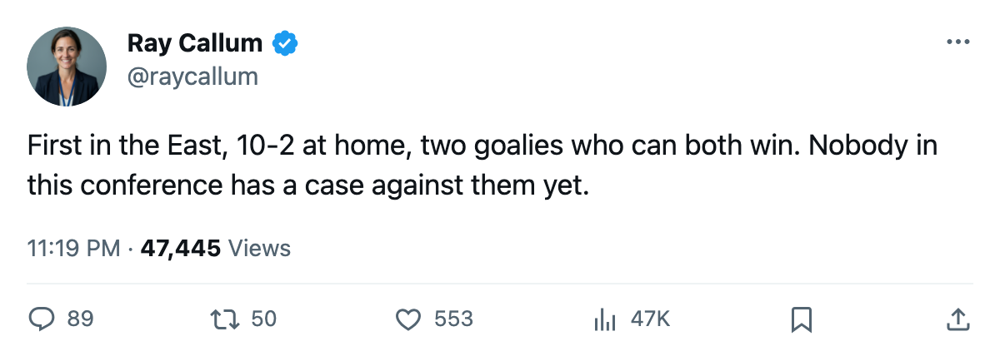
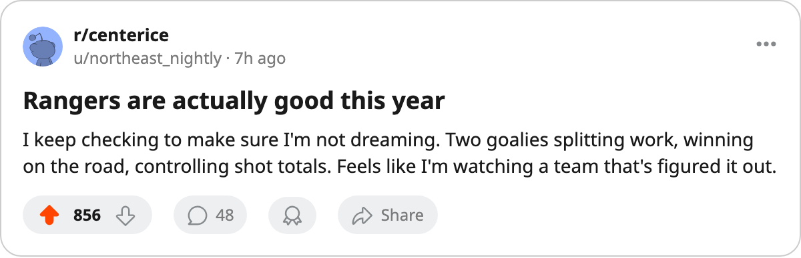

Numbers Game: New York Is First in the East at 35 Points, and Nobody Has Noticed
Ten wins at home, 8-1-1 over the last 10, and a goaltending split that actually works.
 Ray CallumSenior correspondent · Home Ice Network
Ray CallumSenior correspondent · Home Ice Network
The  New York Rangers sit atop the Eastern Conference with 35 points after a 4-1 win over
New York Rangers sit atop the Eastern Conference with 35 points after a 4-1 win over  New York Islanders on Wednesday. They've played 23 games, the most in the conference, and they are 10-2 at home.
New York Islanders on Wednesday. They've played 23 games, the most in the conference, and they are 10-2 at home.
 Mike Dunham88 has started 17 of 23 games.
Mike Dunham88 has started 17 of 23 games.  Dan Blackburn87 has 6. The Rangers are 10-2 at home and 6-5 on the road. That two-game differential between their own building and everyone else's is small.
Dan Blackburn87 has 6. The Rangers are 10-2 at home and 6-5 on the road. That two-game differential between their own building and everyone else's is small.  Tampa Bay Lightning wins 7 of their 10 at home and only 3 on the road. Los Angeles is 4-3 at home and 2-12 away. New York doesn't need a fortress because they travel well.
Tampa Bay Lightning wins 7 of their 10 at home and only 3 on the road. Los Angeles is 4-3 at home and 2-12 away. New York doesn't need a fortress because they travel well.
| Club | GP | Pts | Home | Away | Diff |
|---|---|---|---|---|---|
| NYR | 23 | 35 | 10-2 | 6-5 | +11 |
| TOR | 21 | 32 | 10-4 | 6-1 | +26 |
| BOS | 20 | 29 | 5-4 | 8-3 | +13 |
| NJ | 18 | 29 | 8-4 | 6-0 | +18 |
The 30 shots to 17 on Wednesday told the story of a club controlling its own pace. At 62 goals for and 51 against, the +11 differential is third in the conference behind  Toronto Maple Leafs's +26 and
Toronto Maple Leafs's +26 and  New Jersey Devils's +18. Neither unit is first in the conference. Both are good enough, which is how point totals get built.
New Jersey Devils's +18. Neither unit is first in the conference. Both are good enough, which is how point totals get built.
The schedule makes this real or makes it fade
New York has played 5 more games than New Jersey Devils and 3 more than  Boston Bruins. The Devils sit 6-0 on the road, a mark nobody else can touch.
Boston Bruins. The Devils sit 6-0 on the road, a mark nobody else can touch.  Ottawa Senators has played 19 games. This conference table moves with every game played, and the teams at the bottom of it have days in hand.
Ottawa Senators has played 19 games. This conference table moves with every game played, and the teams at the bottom of it have days in hand.
For the Rangers, the last 10 games show 8 wins, 1 loss, and 1 overtime loss. They haven't been hot for a month straight; they've been good for a month straight. Dunham and Blackburn split the work without either one breaking down, which puts them ahead of  Roman Cechmanek86 in Los Angeles carrying 95 percent and
Roman Cechmanek86 in Los Angeles carrying 95 percent and  Johan Hedberg89 in Pittsburgh at 95 percent.
Johan Hedberg89 in Pittsburgh at 95 percent.
They head to  Atlanta Thrashers on Friday, a club sitting at 6-11-2 with 16 points and 4 men on the shelf.
Atlanta Thrashers on Friday, a club sitting at 6-11-2 with 16 points and 4 men on the shelf.

